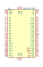
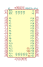
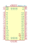

| Symbol |
Description |

P8X32A-D40 | Description: Parallax Propeller 8 core, 32 bit, 80 MHz microcontroller, 3.3VDC, 40-pin DIP
Keys: microcontroller multicore Parallax Propeller DIP
Datasheet: https://www.parallax.com/sites/default/files/downloads/P8X32A-Propeller-Datasheet-v1.4.0_0.pdf |

P8X32A-M44 | Description: Parallax Propeller 8 core, 32 bit, 80 MHz microcontroller, 3.3VDC, 44-pin QFN
Keys: microcontroller multicore Parallax Propeller QFN
Datasheet: https://www.parallax.com/sites/default/files/downloads/P8X32A-Propeller-Datasheet-v1.4.0_0.pdf |

P8X32A-Q44 | Description: Parallax Propeller 8 core, 32 bit, 80 MHz microcontroller, 3.3VDC, 44-pin LQFP
Keys: microcontroller multicore Parallax Propeller LQFP
Datasheet: https://www.parallax.com/sites/default/files/downloads/P8X32A-Propeller-Datasheet-v1.4.0_0.pdf |